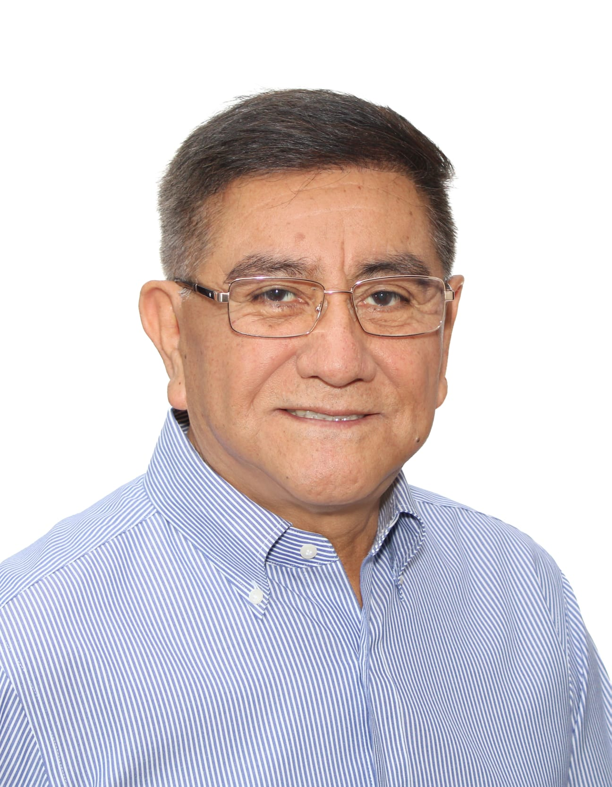
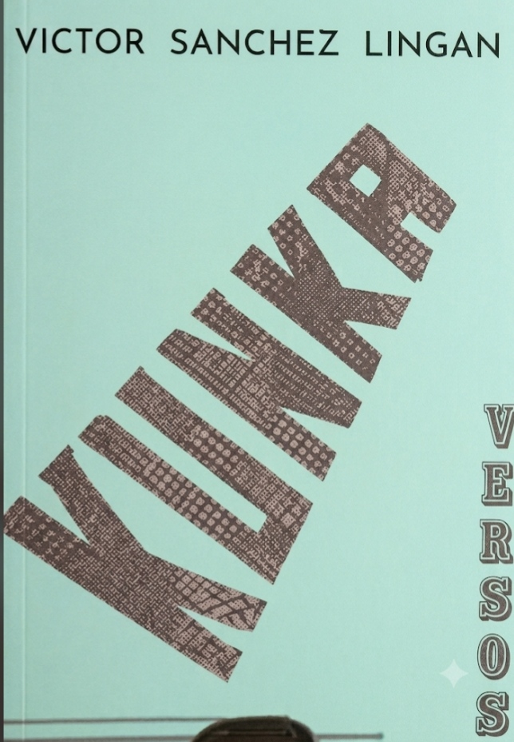
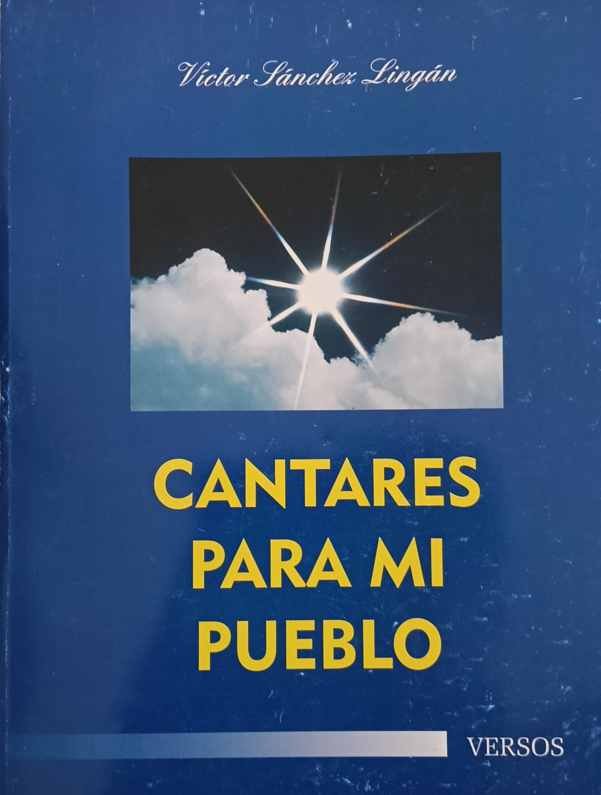
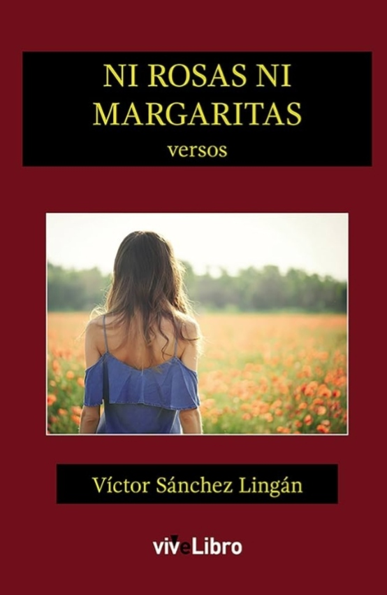
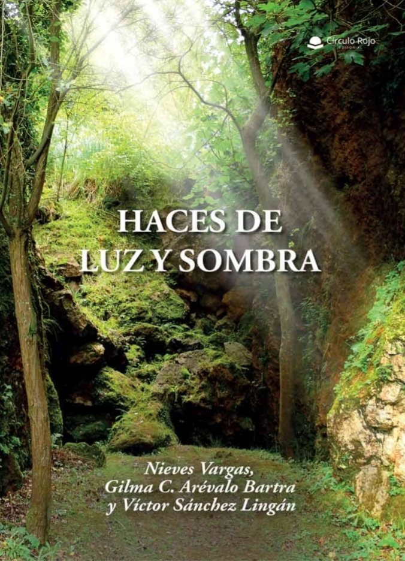
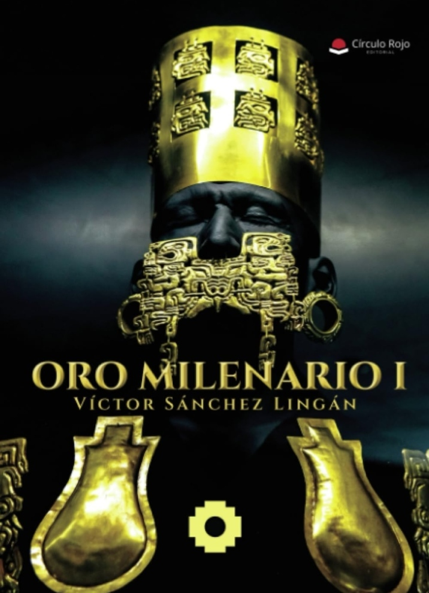
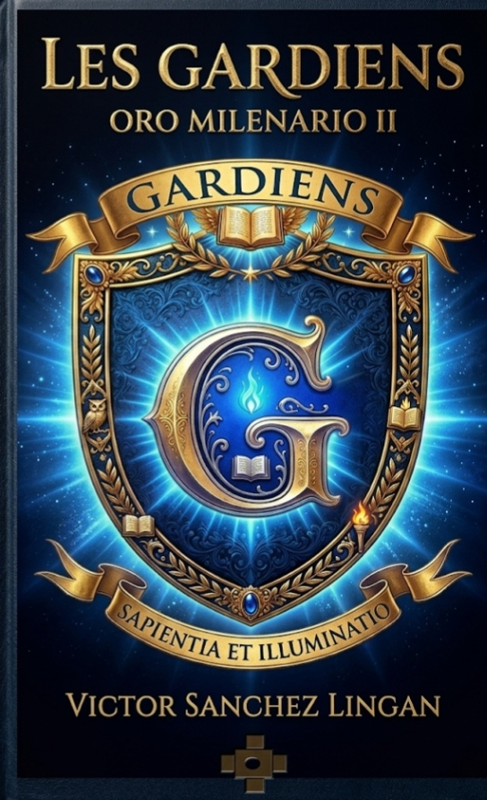
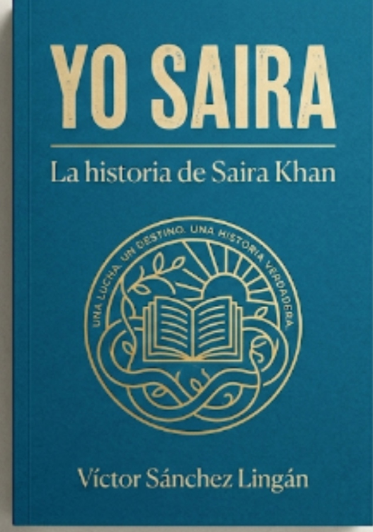

Víctor Manuel Sánchez Lingán| Nacimiento | 25 de noviembre de 1962 Chepén, La Libertad, Perú |
| Nacionalidad | Peruana - Española |
| Cónyuge | Rosa Tirado |
| Hijos | Liz Mireya, Lynd Cristina y Víctor Manuel |
| Padres | Manuel Sánchez Novoa y María Eufemia Lingán Quesquén |
| Educación |
• Escuela Superior de Educación Profesional (ESEP) - La Libertad. • Universidad Inca Garcilaso de la Vega. • FUC Fundación Universitaria San Gil, Colombia. |
| Ocupación | Enfermero, escritor y poeta |
| Años activo | 1983 - actualidad |
Víctor Sánchez Lingán nacido el 25 de Noviembre de 1962 en Chepén, La Libertad, Perú; es un enfermero, poeta y escritor peruano residente en España. Es conocido tanto por su labor en el desarrollo comunitario y la salud pública en el Valle del Jequetepeque(1985 - 2005) como por su producción literaria, que abarca la poesía social y la narrativa de ficción histórica.
Nació en Chepén, hijo de Manuel Sánchez Novoa, trabajador agrícola de la ex-hacienda Lurifico, y de María Eufemia Lingán Quesquén. Cursó sus estudios primarios en la Escuela Mayor Alfredo Novoa Cava y los secundarios en el Colegio César Vallejo de su ciudad natal. Estudió enfermería en Perú, título que más adelante fue homologado en España. Asimismo, cursó estudios para Profesor de Biología y Química en la Universidad Inca Garcilaso de la Vega en Lima. Cuenta con formación en Análisis Transaccional - Relaciones Humanas (Niveles I y II) por ALAT Perú. También en Desarrollo Social Latinoamericano por la Fundación Universitaria San Gil (FUC) de Colombia.
Entre 1983 y 1985 se trasladó a la Amazonía peruana para trabajar en equipos de topografía para el proyecto Caminos Vecinales Alto Mayo. En 1986 se incorporó a la organización no gubernamental (ONG) CESDER en calidad de agente comunitario y educador en salud, iniciando una etapa de gestión social en las provincias del Valle del Jequetepeque. Durante este periodo diseñó y ejecutó proyectos de carácter sanitario, formativo y social financiados por diversas organizaciones europeas. Fue designado coordinador operativo de los programas Madre-Niño y Mujer-Supervivencia de UNICEF, implementando estrategias de movilización social, concertación y planificación interinstitucional. Durante su gestión enfrentó situaciones de crisis climática y sanitaria, como el Fenómeno del Niño y la epidemia del cólera, priorizando la atención en zonas vulnerables.
A lo largo de su trayectoria comunitaria impulsó, asesoró y gestionó diversas organizaciones de base:
Tras el cese operativo de CESDER en 1999, continuó sus labores comunitarias entre los años 2000 y 2004 en la ONG CIPROS, donde se desempeñó como coordinador de proyectos sociales, director del Centro Médico Cipros y asesor de ADEPROS. En 2005 emigró a Barcelona (España), ciudad donde se estableció y ejerce como enfermero asistencial.
Inició su producción poética durante la adolescencia. A los 17 años obtuvo el primer lugar en el concurso literario "La mejor Poesía a Chepén", organizado por la Casa de la Cultura de dicha localidad, entidad a la cual se integró posteriormente. En 1989 publicó su primer poemario, ''Kunka'' (término quechua que significa "voz"), caracterizado por la convergencia entre la lírica social y la romántica. En 2005, previo a su traslado a Europa, editó ''Cantares para mi Pueblo'', obra con un marcado énfasis en la descripción de la realidad social. En 2017 publicó en Barcelona su tercer poemario, ''Ni Rosas ni Margaritas'' (Editorial Vivelibro), el cual tuvo una recepción destacada dentro de la comunidad hispanohablante y latinoamericana en Europa, dando paso a su inclusión en diversos encuentros literarios y antologías poéticas. En 2022 publicó el poemario ''Haces de luz y sombra'' en coautoría con las poetas Nieves Vargas y Gilma Arévalo. En 2024 incursionó en la narrativa con la publicación de su primera novela de ficción histórica, "Oro Milenario I". La obra fue presentada en distintas ciudades de Europa y Perú, logrando una segunda edición en el mismo año debido al agotamiento de su primer tiraje. Hacia el año 2026 concluyó la impresión de su secuela, "Les Gardiens – Oro Milenario II", y finalizó el manuscrito de la novela inédita "Yo Saira – la historia de Saira Khan" .
Inició su producción poética durante la adolescencia. A los 17 años obtuvo el primer lugar en el concurso literario “La mejor Poesía a Chepén”, organizado por la Casa de la Cultura de dicha localidad.
"La lírica se convierte en un puente entre la realidad social y el dolor humano."






